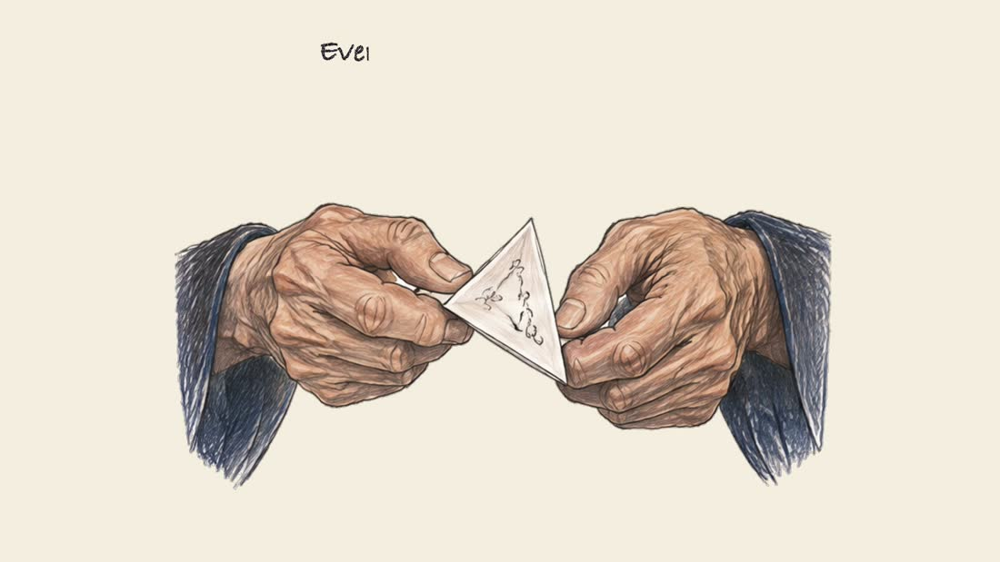
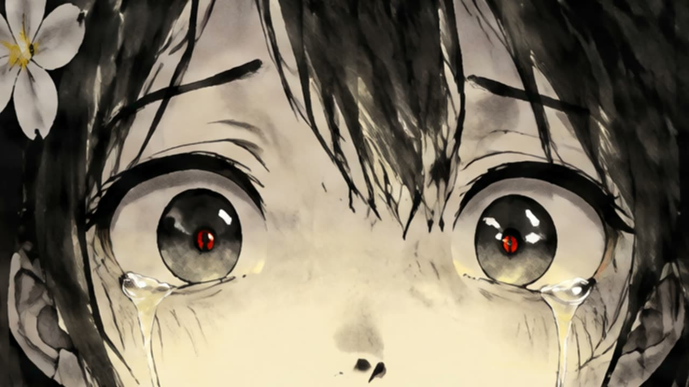
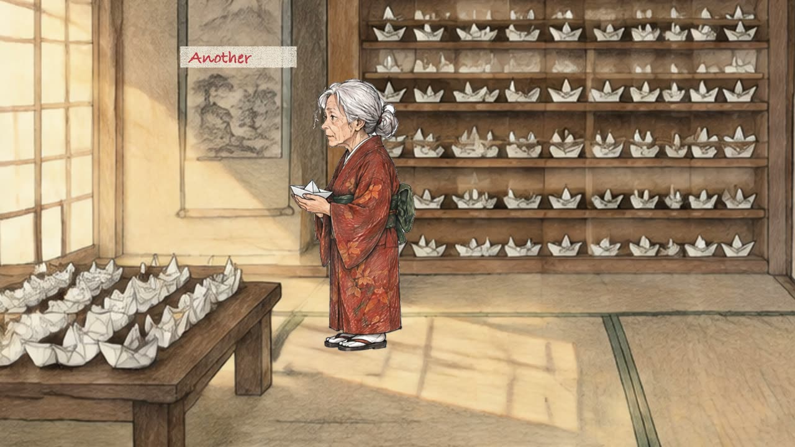
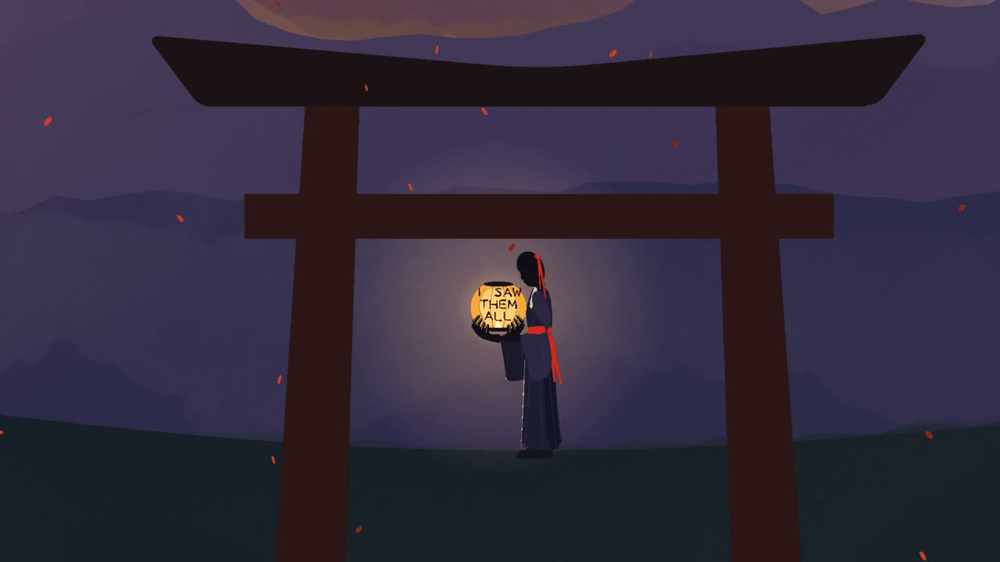

Codex
Uses the best image model it has, with no extra tool. Install, guiding and images are tested, but not yet a complete film.
Give your film project Full access when asked, so the browser that draws and checks your film can start.Turn your story into a Japanese animated film. Your AI assistant becomes a whole animation studio and guides you through every step.
No warping. No morphing. No slow zoom on a still image pretending to be animation. Beyondsumi works like an old hand-drawn team, so the film moves because someone drew it moving.
Sumi-e is Japanese ink painting: expressive brushwork, tonal washes and space that lets a subject breathe. Beyondsumi brings that spirit into animated storytelling.
Bring an idea, a finished story or your own recorded narration. Stories that make people feel, fables, children's tales, history, horror and mystery.
Fictional storytelling demos made with Beyondsumi. They show what is possible, not a promise of results.
These are the real pictures from One Paper Boat, in the order they play. Twelve new drawings for every second of normal acting, twenty-four for fast action, and real drawn mouths timed to the voice when a character speaks.

No animation, editing or code needed. A helper sets everything up the first time, and a guide takes you through every film. It always says where you are, what happens next and exactly what you can reply.
An example of how a film goes. Click any step, or a reply.



One download, with no other skills or packages needed. How it gets its pictures depends on your app.
Uses the best image model it has, with no extra tool. Install, guiding and images are tested, but not yet a complete film.
Give your film project Full access when asked, so the browser that draws and checks your film can start.Uses the best image model it has for your story, plan and pictures, in Chat or Work.
Its hosted browser could not run our film tools when we tested, so you finish the film in Codex or Claude Code.Has no image model of its own, so it asks you for access to a third-party image tool for Dark and Light.
No access? It animates in code with Sumi Vector, at no image cost.Made inside Codex with its own image model, and no API key.
A Sumi Dark sample from our Codex test, in black brush with red and one more vibrant colour.Watch your film, download the real HD MP4 and see the other styles. Asking for another style only prepares a request for your assistant, so nothing is made in secret.
Try the demo dashboardEvery film gets background music and sound effects. Music lowers itself whenever someone speaks.
Three of the 12 original music themes included.
Please install Beyondsumi for me from FOLDER. Read INSTALL.md in that folder, choose the guide for this app and do the steps yourself. I am a complete beginner, so tell me in simple words what is happening. If it needs my permission or a missing program, explain why and ask me first. When it is done, start the Beyondsumi first-time helper.
Use Beyondsumi. I'm a beginner.
Help me make a 30-second story about [my idea].
Ask whether I want narration, dialogue or both.
Show me the script and the plan before making anything.
Make the music and sound effects part of the story.
Your computer also needs Node 22 or newer, Chrome, Edge or Chromium, FFmpeg and Python 3. The helper tells you what is missing and asks before installing anything. How to use it in ChatGPT.
Too many AI videos feel interchangeable. I wanted a workflow that starts with a real story, gives the characters room to act, and treats sound and cinematography as part of the film.
Muhammad Tahir AshrafBeyond Tahir · BeyondTahir.com · GitHub
Yes, that is who it is for. The assistant explains each step in everyday words, shows you the work and tells you what you can reply.
No. No video-generation API is used. Films are built from real separate drawings on your own computer.
No other skills or npm packages. Your computer needs Node, a browser, FFmpeg and Python, and Sumi Dark and Sumi Light also need an image tool.
No tool can promise that. YouTube decides under its own rules, and it does not pay for repetitive or mass-produced content. Read YouTube's policy.
Keys never go in chat, project files or the package. Paid images and voices need your approval first.
Ten skills for the studio, the animation and sound tools, 12 original music themes, Sumi Vector and the guides for Voicebox and ElevenLabs. The finished demo films are separate downloads.